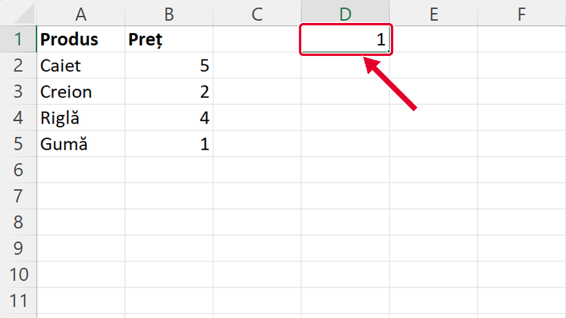
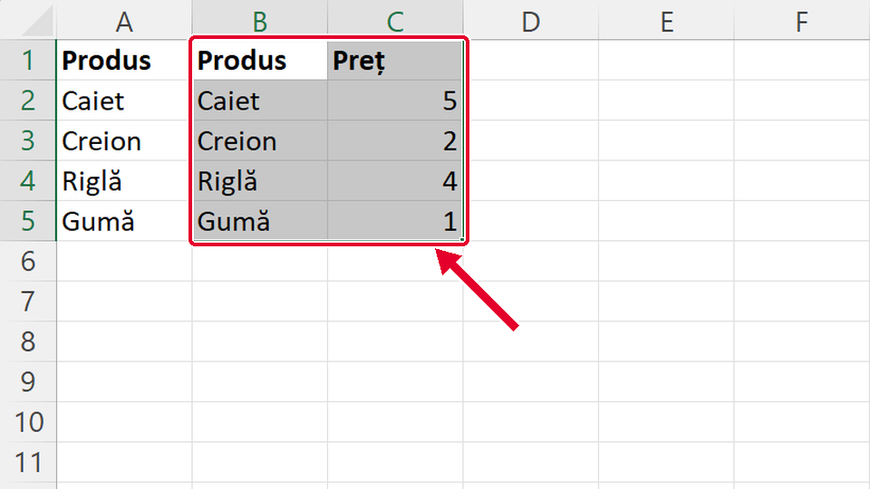
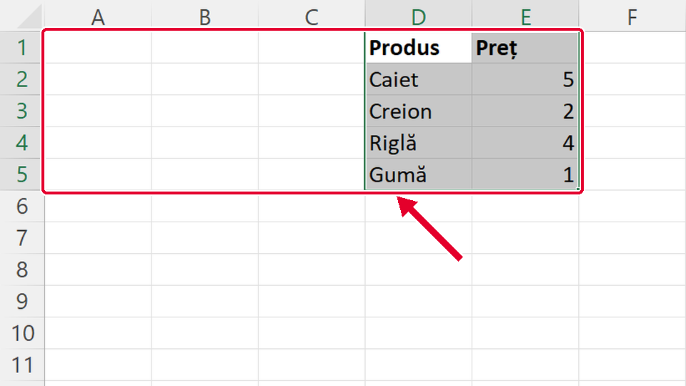

Început
Copiezi un tabel cu Ctrl+C și Ctrl+V
Taste: Spațiu = pauză / continuă · ← și → = pasul anterior / următor · cu Tab ajungi la „Rulează singur”; acolo Spațiu îl pornește sau îl oprește. Poți apăsa și pe film.

Legat de asta
Se deschid într-o filă nouă, ca să nu pierzi filmul de aici.
- ApoiMuți un tabel cu Ctrl+X și Ctrl+V ↗
Muți tabelul în alt loc cu Ctrl+X, Decupare (Cut), și Ctrl+V: locul vechi rămâne gol.
- Altă caleCopiezi formula în jos ↗
O formulă o copiezi în rândurile de dedesubt trăgând de instrumentul de umplere, fără Ctrl+C.
- Același gestScris îngroșat cu Ctrl+B ↗
Selectezi la fel, trăgând de la o celulă la alta, apoi apeși Ctrl+B: scrisul se îngroașă.
Dacă nu-ți iese
Alege ce vezi pe ecran.
În D1 a apărut doar un număr, 1, nu tot tabelul.

De ce: Ai dat clic pe A1 și apoi alt clic pe B5. Două clicuri separate nu fac o zonă: al doilea a ales doar B5, iar Excel a copiat doar ce era în ea.
Ce faci:
- Apeși Ctrl+Z ca să scoți numărul lipit.
- Apeși pe A1, ții apăsat și tragi până la B5; abia acolo dai drumul.
- Apoi Ctrl+C, clic pe D1 și Ctrl+V.
Taste: Ctrl+Z · Ctrl+C · Ctrl+V
În coloana B, unde erau prețurile, scrie acum Produs, Caiet, Creion…, iar prețurile au ajuns în coloana C.

De ce: Ai lipit cu colțul în B1, adică peste tabel. Lipirea scrie peste ce era acolo, fără să întrebe.
Ce faci:
- Apeși Ctrl+Z: tabelul revine cum era.
- Selectezi din nou A1:B5 și apeși Ctrl+C.
- Dai clic pe D1, o celulă goală, departe de tabel, și apeși Ctrl+V.
Taste: Ctrl+Z · Ctrl+C · Ctrl+V
Tabelul a apărut în D1:E5, dar din A1:B5 a dispărut.

De ce: Ai apăsat Ctrl+X, Decupare (Cut), în loc de Ctrl+C. Decuparea mută datele, nu le copiază.
Ce faci:
- Apeși Ctrl+Z: tabelul se întoarce în A1:B5.
- Selectezi din nou A1:B5 și apeși Ctrl+C (C de la copiere).
- Clic pe D1, apoi Ctrl+V.
Taste: Ctrl+Z · Ctrl+C · Ctrl+V